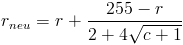
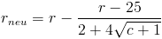

Schnellzugriff Nemp speichert die Informationen der Medienbibliothek auch in
den Audiodateien selbst. Dazu gehören Informationen über
Interpret, Titel und Album, aber auch weitere Daten wie Bewertung,
Abspielzähler, Lyrics und erweiterte Tags. Da durch
Speicherung die Dateien verändert werden, kann diese Funktion
deaktivert werden (seit Nemp 4.2 muss sie explizit aktiviert
werden). Sinnvoll ist das Deaktivieren eigentlich nur dann, wenn die
Musikdateien auch Teil des Backup-Planes sind, oder die Dateien auch
noch über Filesharing-Dienste angeboten werden sollen.
Hinweis: Wenn kein Schnellzugriff auf die Metadaten gewährt wird,
dann sind einige Funktionen von Nemp deaktiviert, damit die Daten in
den Dateien und die in der Medienbibliothek nicht unnötig
inkonsistent werden.
Automatische Bewertung, Abspielzähler Nemp kann die Dateien im Laufe der Zeit automatisch bewerten. Das
heißt, dass häufig gehörte Lieder nach und
nach eine
bessere Bewertung bekommen als solche, die nicht so oft
angehört
werden. Außerdem können abgerochene Lieder
automatisch eine
schlechtere Bewertung bekommen.
Die Änderung der Bewertung hängt dabei von der
aktuellen
Bewertung r ab, und vom Abspielzähler c. Wenn die aktuelle
Bewertung sehr schlecht ist, wird die Bewertung stärker
erhöht, und wenn der Abspielzähler hoch ist,
verringert sich
die Verbesserung. Die genaue Formel, die Sie auch im Quellcode
nachlesen können, lautet:

Dabei ist 255 die maximal mögliche Bewertung. Die Wurzel und
den
ganzen Rest habe ich so gewählt, bis ich den Eindruck hatte,
dass
das Ergebnis halbwegs sinnvoll ist. Da steckt also keine
"höhere
Mathematik" hinter, sondern ist einfach so ausgewürfelt. Aber
die
Hilfe darf ja auch mal was komplizierter aussehen, oder?
Die Formel für das Abwerten lautet entsprechend (25 ist die
minimale Bewertung, das entspricht einem halben Sternchen):

Sie können einstellen, ob ein abgespieltes Lied besser, und ob
ein
abgebrochenes Lied schlechter bewertet werden soll. Dabei bedeutet
Abgespielt: Das Lied wurde mindestens zur Hälfte
oder mindestens 4 Minuten lang angehört
Abgebrochen: Das Lied wurde nicht "abgespielt"
Diese Definition deckt sich mit der, die auch für das Scrobbeln benutzt wird.
Für kurze Lieder können Sie die automatische
Bewertung getrennt abschalten